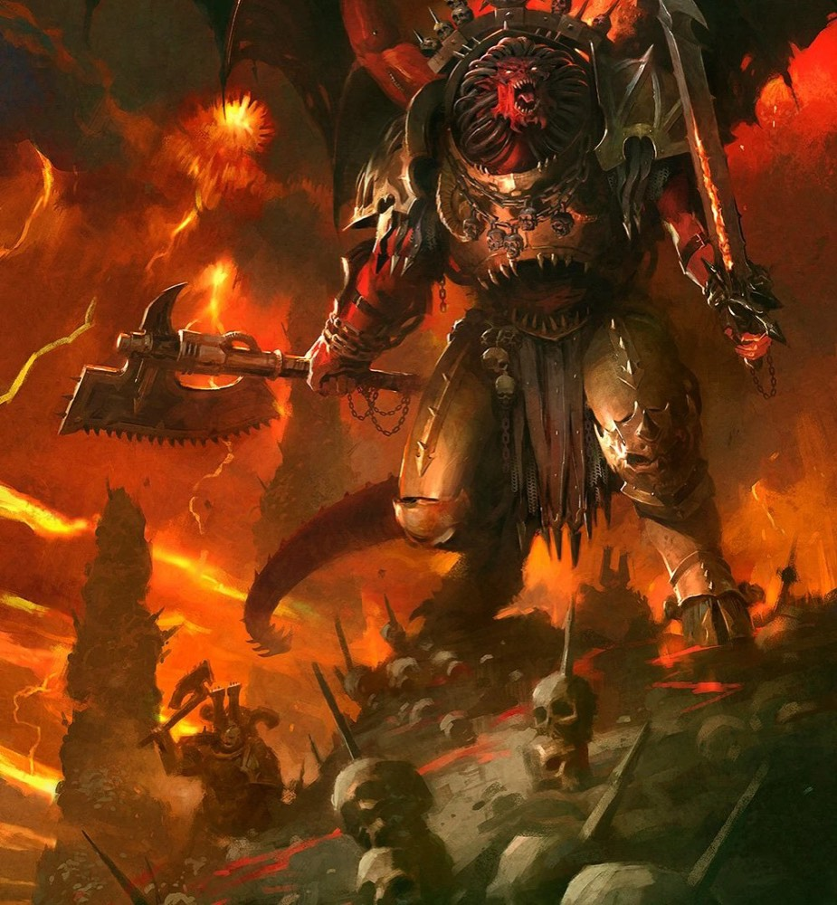
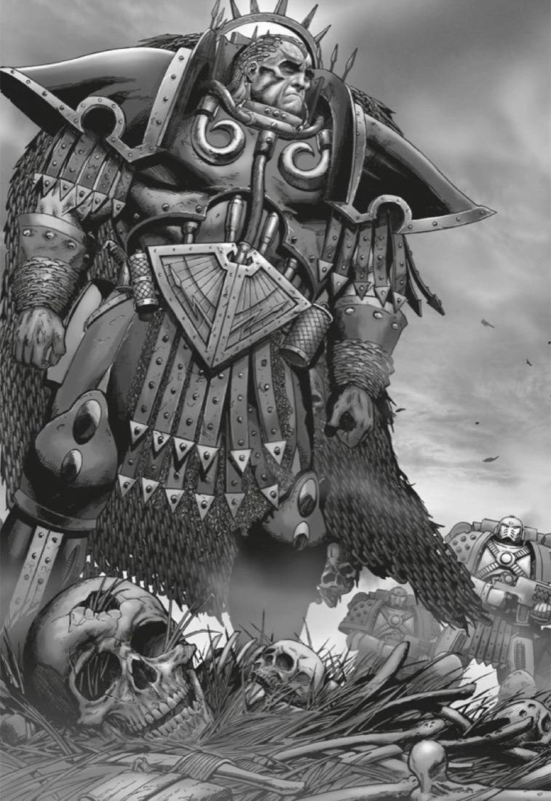

Angron
| Angron | |
|---|---|
| The Red Angel, the Lord of the Red Sands | |
 Artwork © Games Workshop | |
| Primarch of the World Eaters | |
| Tenure | 899.M30 – present |
| Daemon Primarch of Khorne | |
| Tenure | Since the Horus Heresy |
| Also known as | The Red Angel; Lord of the Red Sands; the Unbeaten |
| Allegiance | Imperium of Mankind (until 005.M31); Chaos (Khorne) |
| Legion | |
| Homeworld | Nuceria (adoptive; the planet of his upbringing) |
| Created | Terra, c. 792.M30, in the gene-laboratories of the Emperor of Mankind |
| Discovered | Nuceria, 899.M30, in the later years of the Great Crusade |
| Status | Alive as a Daemon Prince of Khorne; banished to the Warp by Lion El'Jonson during the Arks of Omen campaign (early 42nd millennium), and expected to return |
| Gene-father | The Emperor of Mankind |
| Brothers | The other primarchs, notably Lorgar, Sanguinius and Perturabo |
| Equerry | Khârn, Captain of the Eighth Assault Company |
| Wargear | The chainaxes Gorechild and Gorefather; later the chainaxe Spinegrinder and the daemon blade Samni'arius |
| Known for | The Butcher's Nails; the revolt of the Eaters of Cities; the Isstvan III atrocity; the Shadow Crusade; the breach of the Eternity Wall in the Siege of Terra; the First War of Armageddon |
Angron, called the Red Angel and in his youth Angron Thal'kyr, was the primarch of the XII Legion of the Space Marine Legions, the World Eaters. Raised as a slave-gladiator on the world of Nuceria, he was bound by his owners to a set of cortical implants called the Butcher's Nails, which turned his anger into the only sensation he could still enjoy and destroyed his capacity for restraint. Rescued from a hopeless last stand by the Emperor against his will, he never forgave the abandonment of the slave army he had led, and the grievance defined him for the rest of his existence.[1][2]
During the Great Crusade Angron and his Legion were among the most feared instruments of Imperial conquest. When Horus rebelled in 005.M31 Angron joined him, drawn in part by the preaching of his brother Lorgar, who offered him an end to the pain of the Nails. He fought at Isstvan III and the Drop Site Massacre, was transformed into a Daemon Prince of Khorne in the Shadow Crusade, and in the Siege of Terra led the World Eaters over the Eternity Wall and into the outer defences of the Imperial Palace.[3]
Since the Heresy he has been the greatest champion of Khorne in the service of Chaos. He led the Blood God's armies in the Dominion of Fire in M38 and in the First War of Armageddon in the 41st millennium. After the opening of the Great Rift he returned to the material universe on a scale unseen for ten thousand years, and the Inquisition records that he can no longer be held in the Warp for long. In the Arks of Omen campaign he was struck down and banished by the primarch Lion El'Jonson, the most recent of the Imperium's victories against him.[4]
Early life on Nuceria
[edit]
Discovery by the Nucerians
[edit]Like his brothers, Angron was lost to the Emperor when the primarchs were scattered through the Warp as infants. His capsule came to rest on Nuceria, a technologically advanced world whose oligarchs, the High-Riders, lived in luxury behind palace walls while the mass of the population starved in the slums beneath them. Imperial archives place Nuceria somewhere in the Ultima Segmentum, but the name of the world was struck from the public record at the Emperor's order, and some archivists doubt that it survives.[1]
Records of the Nucerian side, preserved only in fragments, say that a slaver found the infant high in the northern Desh'elika mountains, surrounded by the corpses of a number of aliens. It is generally supposed that they were Aeldari who had foreseen what he would become and tried to kill him. The child was wounded but alive, and was sold into the household of the ruling clan of the city-state of Desh'ea.[5]
The Lord of the Red Sands
[edit]The boy was thrown into the arena as a child and survived by killing everything placed in the pit with him. His owners, seeing his strength, kept him, named him Thal'kyr, "Child of the Mountain" in the local tongue, and trained him as a gladiator. Within a few years he had become the best fighter their world had known. The crowds called him the Lord of the Red Sands and the Unbeaten, and it is recorded that he spared opponents who fought well. In the Nucerian custom he cut a scar into his own skin for each victory, forming a record called the Triumph Rope, and unlike every other gladiator in the city he had no black scar, the mark of a defeat.[5]
He was mentored by an older gladiator, Oenomaus, who became the nearest thing he had to a father. The two fought as a pair and ended their careers in one of the great spectacles of the age, defeating two ogryn that had been fitted with Nails. The High-Riders then ordered the pair to fight each other to the death. Angron refused and insulted his masters in front of the city. As punishment the Butcher's Nails were hammered into his own skull.[2]
The Butcher's Nails
[edit]The Nails were relics of the Dark Age of Technology, adapted by Nucerian surgeons for use on slaves. They rewarded violence with a rush of pleasure and suppressed every other emotion, so that a gladiator fitted with them could feel nothing but rage and the satisfaction of killing. Angron's reaction to the first surgery is the best known episode of his youth: released into the arena, he destroyed Oenomaus without knowing him. Recovering his senses afterwards, he is said to have screamed for days. He swore that he would one day break free and destroy his owners.[5]
The Nails were not made for a primarch's brain. Examination much later by the Mechanicum, in secret, showed that they had rewired his emotional centres, that they were slowly destroying his reason, and that removing them would kill him. The Emperor, informed by the archmagos who made the examination, forbade the finding from being recorded, and it was concealed from the Legion for the remainder of the Great Crusade.[2]
The Eaters of Cities
[edit]After a failed escape, Angron concluded that a lone fighter could not free himself, and planned a rising of every gladiator in his arena. The largest games ever held on the world gave him his chance. His fighters turned on their guards and fought their way into the streets of Desh'ea, and nearly two thousand of them reached the mountains. They called themselves the Eaters of Cities. For several years they defeated every army sent against them, but their numbers fell, and when the High-Riders at last brought seven armies against the survivors on the ridge of Fedan Mhor, about a thousand remained.[5]
At this point, in 899.M30, the Emperor came to Nuceria, drawn by the psychic signature of his son, and offered Angron the command of the XII Legion. Angron refused, saying that his place was with the slaves who had followed him. The Emperor saw that the primarch and his followers would be annihilated by the following dawn, and had Angron teleported to his flagship against his will. Watching from orbit, Angron saw the army of the Eaters of Cities destroyed. He killed one of the Emperor's bodyguards, and the Emperor subdued him by psychic force. When Angron asked why the Emperor had not saved the others, he was told that the matter was beneath the vision of the Master of Mankind.[1]
Most Imperial historians hold that this exchange, or something close to it, is the root of Angron's later hatred. He accused the Emperor of keeping the Eaters of Cities to die while sparing the foster families of other primarchs, and no later Imperial argument ever answered him.[2]
The Great Crusade
[edit]Command of the War Hounds
[edit]The XII Legion, the War Hounds, had been among the last to find its primarch, and its morale was low. Angron's first act was to kill any of them who came into his presence. He is recorded to have murdered at least seven senior officers, among them the Legion Master, before Khârn, the captain of the Eighth Assault Company, went to the primarch's quarters alone. Khârn was beaten almost to death and refused to yield. The primarch took this as proof that the Legion was worthy of him, and took command. He renamed the Legion the World Eaters in memory of the army of Nuceria, and after a promise made to him by a company captain that the Legion would become "eaters of worlds".[5]
Under Angron the Legion's doctrine altered. Its traditional Terran organisation was set aside in favour of the arena, with gladiatorial combat, brotherhood of the blade and a growing readiness to fight without restraint. Angron's own methods drew criticism in the councils of the Crusade, and several of his brothers, notably Roboute Guilliman, held that the Legion's casualties and the bloodshed it left behind were excessive. His supporters replied that no Legion was faster to destroy an enemy and none more willing to take its worst campaigns.[6]
Angron's secret
[edit]The Emperor and his regent Malcador the Sigillite kept the condition of the Nails from the Legion. A senior archeotech specialist of the Mechanicum was brought to Terra to examine the implants and concluded, as had his predecessor, that they could not be removed and that the damage they did would eventually kill the primarch. Few in the Great Crusade knew this, and none in the Legion. The secret was later used against the Emperor by those who learned it.[2]
The Horus Heresy
[edit]
Allegiance to the Warmaster
[edit]Angron's attitude to the Emperor made him an easy recruit for Horus's conspiracy. The approach was made through Lorgar, the primarch of the Word Bearers, who had himself been broken by the Emperor's rejection and who proposed to Angron a way to end the Nails' agony. Angron's loyalty to the Emperor had been formal at best. In 005.M31 he joined the Legions of the Warmaster at the opening of the Heresy.[3]
Isstvan III
[edit]The World Eaters were present at Isstvan III in 005.M31. Horus had arranged for loyalist elements of four Legions, including a part of Angron's own, to be gathered on the planet. The virus bombardment of the world's surface killed most of them, and Angron personally led the ground assault on the survivors, who held out for nearly two months before they were overcome. He then took part in the Drop Site Massacre at Isstvan V.[3][7]

The Shadow Crusade
[edit]After Isstvan V, in 007.M31, Lorgar proposed a joint campaign by the Word Bearers and the World Eaters into the realm of Ultramar. The Shadow Crusade, as Imperial archives call it, destroyed the populations of twenty-six worlds in rapid succession. At one point the World Eaters were lured into a trap by the Ultramarines in the ruins of Armatura, a war-world in the Five Hundred Worlds, and lost many of their number beneath collapsing buildings. As the campaign went on Lorgar became aware that the Nails were killing his brother much faster than anyone had thought.[3]
It was in the Shadow Crusade, at Nuceria in 008.M31, that Angron passed from mortality to daemonhood. Lorgar's sorcerous rite ended the primarch's pain, but it did so by giving him to Khorne. The Imperial accounts agree on the substance of what followed: Angron became a Daemon Prince, his body transformed, and his Legion, which had fought as an army of gladiators, now fought as the host of the Blood God. Surviving accounts of the rite disagree on whether Lorgar acted in a spirit of compassion or of calculation.[2][3]
Ullanor and the muster
[edit]After the Shadow Crusade Angron and his Legion went on a rampage through the Imperium and ignored the Warmaster's order to muster. Perturabo of the Iron Warriors was sent to bring him to the assembly at Ullanor. The two brothers fought; Angron prevailed in strength, but Perturabo, though wounded, taunted him that he had been born a slave and would now remain one for ever. Angron went to the muster.[3]
The Siege of Terra
[edit]When Horus' fleet reached the Sol System in 014.M31, Angron demanded to be sent against the Palace at once. The Emperor's psychic defences were still intact, and would have been fatal to a daemon, so he was held in the orbit of Terra. Hearing that the Death Guard would be given the first assault, he fell into a rage and killed many of the crew of his flagship, the Conqueror. The ship's mortal captain, Lotara Sarrin, with the help of Khârn and the Night Lords captain Gendor Skraivok, arranged for him to be transported into a maze that Perturabo had built aboard Konrad Curze's flagship Nightfall. Angron was trapped there until the Traitors' rituals weakened the barrier around Terra, whereupon he was fired from the ship to the surface as a meteor.[8]
On Terra he fought his way to the Palace walls and challenged Sanguinius, who saluted him and declined, saying that they would fight, but not that day. When the Lion's Gate Spaceport fell and the Emperor's defences shrank to the inner Palace, Angron and the World Eaters took the Eternity Wall and led the assault on the Palace itself. It is recorded in the Legion's own annals that it was his daemon blade that broke the great gate, a claim the Sons of Horus dispute.[8]
When Horus was killed aboard the Vengeful Spirit the Traitor army collapsed. Angron was the last of the primarchs to leave, and he is reported to have looked back at the Palace as his ship rose. He led the World Eaters into the Eye of Terror.[8]
After the Heresy
[edit]Dominion of Fire and Armageddon
[edit]Angron's appearances in the material universe in the following millennia were few and are well recorded. In the middle of M38, at the head of about fifty thousand Chaos Space Marines and other forces, he overran some seventy sectors in two hundred years. The Imperium answered with a crusade of four Chapters, two Titan Legions and more than thirty regiments of the Astra Militarum, which recovered most of the lost ground. Imperial archives call the war the Dominion of Fire.[9]
In 444.M41 his space hulk, the Devourer of Stars, emerged by chance of the Warp above the hive world of Armageddon, where he led an army of Khornate cultists, daemons and World Eaters in the First War of Armageddon. The planet's defenders held, and Angron was banished back into the Warp, though not before the Grey Knights had been called to the world.[9]
Return in the Era Indomitus
[edit]The opening of the Great Rift in 999.M41 made the Warp more porous to material space, and Angron returned. The Inquisition's records of the early 42nd millennium report that when he is cast back into the Warp he returns without harm after eight weeks, eight days and eight hours, heralded by eight crimson portents, an event they believe to be tied to the quantity of energy that pours from the Rift. The World Eaters, who had split into independent warbands after the massacre at Skalathrax that earned Khârn his epithet of "the Betrayer", now gather to his call. Some warbands still wear the blue and white of the Great Crusade, while others have adapted to war on the decks of ships or in armoured vehicles.[4]
The campaign called the Arks of Omen is the best-documented recent appearance. Angron returned to the material universe on the bridge of the Conqueror over the world of Kalkin's Tribune, killed the four lieutenants of the Chaos Lord who had been using him, and destroyed the garrison and a fleet of two thousand warships in a matter of weeks. He was drawn to the Imperium Nihilus world of Malakbael by the Choral Engine, a psychic beacon of the same kind as the Astronomican, and destroyed it, releasing a psychic discharge that turned an Imperial fleet into berserkers. He subsequently appeared at Idolatros, a fragment of the ruined world of Caliban, where he defeated the Blood Angels and their Chapter Master Dante. The Lion, who had recently awakened beneath the Rock, then confronted him, and in a duel that ended with a sword through the throat and the removal of the primarch's head, Angron was banished.[4][10]
Earlier accounts, including the Codex of the Ordo Malleus in use before the Rift, state that Angron could not be held in the material universe for more than a short time and that he might be considered a spent threat. These have been withdrawn in the Imperium's current assessment.[4]
Character and abilities
[edit]Khârn's description of his primarch on first sight has become a set-piece in the Legion's records: red-gold hair, deep-set pale eyes, cheekbones like axe strokes, and the face of a king, which rage turned into that of a beast.[5] In pre-Heresy accounts Angron was honourable by the standards of the arena, kept his word to those he respected, and spared those who fought well. Observers who knew him before the Nails were driven in held that he had been a leader with an instinct for loyalty. After the Nails he was increasingly unable to hold a thought, and in the Siege of Terra he is described as having been little more than a vessel for Khorne.
His fellow primarchs rated him highly as a duellist. Corvus Corax is recorded as holding that only Horus, and perhaps Sanguinius, could have beaten him in single combat, while Rogal Dorn thought that he could defeat Angron by strategy and feared him far less than Horus. Leman Russ was considered his equal at close quarters.[1]
Wargear
[edit]- Gorechild and Gorefather: the pair of chainaxes carried by Angron in the Great Crusade, with which he fought in each hand.[1]
- Spinegrinder: his chainaxe in the Era Indomitus.[4]
- Samni'arius: the daemon blade that he now carries. Older accounts record that he fought the First War of Armageddon with a different weapon, a great black sword called the Black Blade, forged by the Dark Mechanicum after his ascension; the Imperium's current archives list Samni'arius as his weapon and treat the Black Blade as an earlier or disputed record.[9][4]
- The Butcher's Nails: the cortical implants, which remain with him.
Legacy
[edit]The Imperial Cult holds Angron to be among the most dangerous of the Emperor's lost sons, and in the Inquisition's archives his name stands at the head of the entry in the Liber Malum, which records those who have taken the path of damnation.[2] His Legion, the World Eaters, is divided between warbands bound together only by his name. The planet where he was raised, if it still exists, is not marked on any Imperial chart.
Timeline
[edit]| Date | Event |
|---|---|
| c. 792.M30 | The infant primarch is scattered from Terra and is found by a slaver in the Desh'elika mountains of Nuceria. |
| Before 899.M30 | Fights as the slave-gladiator Thal'kyr and is fitted with the Butcher's Nails; leads the rising of the Eaters of Cities with Oenomaus. |
| 899.M30 | The Emperor takes him from Nuceria on the eve of his last stand. Angron takes command of the XII Legion, the War Hounds, and renames it the World Eaters. |
| Early 900s.M30 | Golgothan campaigns and the Siege of Sarum; the Nails spread through the Legion. |
| c. 900s.M30 | After the Ghenna Massacre the Space Wolves are sent to bring him to heel in the Night of the Wolf. |
| 005.M31 | Leads the ground assault at the Isstvan III atrocity. |
| 006.M31 | Fights in the Traitor second wave at the Drop Site Massacre on Isstvan V. |
| 007–008.M31 | Joins Lorgar in the Shadow Crusade against Ultramar. |
| 008.M31 | At the Battle of Nuceria Lorgar's rite raises him as a Daemon Prince of Khorne. |
| 011.M31 | The World Eaters' Marches of Madness across the Ultima Segmentum. |
| c. 012–013.M31 | Brought to the Traitor muster at Ullanor by Perturabo. |
| 014.M31 | Fights at the Siege of Terra and the fall of the Lion's Gate Spaceport; the last primarch to leave Terra. |
| Mid-M38 | Leads the Dominion of Fire, the Blood God's campaign of conquest. |
| 444.M41 | Leads the First War for Armageddon and is banished by the Grey Knights. |
| Early M42 | Returns in the Arks of Omen campaign and is banished to the Warp by Lion El'Jonson. |
See also
[edit]Notes
[edit]References
[edit]- ^ a b c d e Arks of Omen: Abaddon (9th Edition), pp. 34-37. Games Workshop. Arks of Omen: Angron (9th Edition), pp. 44-49. Games Workshop.
- ^ a b c d e f g Arks of Omen: The Lion (9th Edition), pp. 27-29, 35-37. Games Workshop. Codex: World Eaters (9th Edition), pg. 13. Games Workshop.
- ^ a b c d e f Guymer, David. Angron: The Red Angel (novel). Black Library, Chs. 4-5, 7-10, 17-20. Counter, Ben. Battle of the Abyss (novel). Black Library, pg. 209.
- ^ a b c d e f Dembski-Bowden, Aaron. Betrayer (novel). Black Library, Ch. 21. Dembski-Bowden, Aaron. Master of Mankind (novel). Black Library, Chs. 7, 13, pp. 78-80.
- ^ a b c d e f Martin, Ian St.. Angron: Slave of Nuceria (novel). Black Library, Chs. 3, 6-9, 22-24, 26-28. French, John. Slaves to Darkness (novel). Black Library, Chs. 17-19.
- ^ French, John. The Solar War (novel). Black Library, Ch. 19. Haley, Guy. The Lost and the Damned (novel). Black Library, Chs. 22, 28-30, Limited Edition Artwork.
- ^ Annandale, David. The Beast Arises - Book Four: The Last Wall (novel). Black Library, Chs. 8, 33. Dembski-Bowden, Aaron. The Emperor's Gift (novel). Black Library, Chs. 16-17.
- ^ a b c Reynolds, Anthony. Chosen of Khorne (Audio Book). Black Library. Codex Heretic Astartes - Chaos Space Marines (8th Edition), pg. 42. Games Workshop.
- ^ a b c Warhammer 40,000: Rulebook (8th Edition), pg. 52. Games Workshop. McNeill, Graham. False Gods (novel). Black Library.
- ^ Counter, Ben. Galaxy in Flames (novel). Black Library. Swallow, James. Flight of the Eisentein (novel). Black Library.